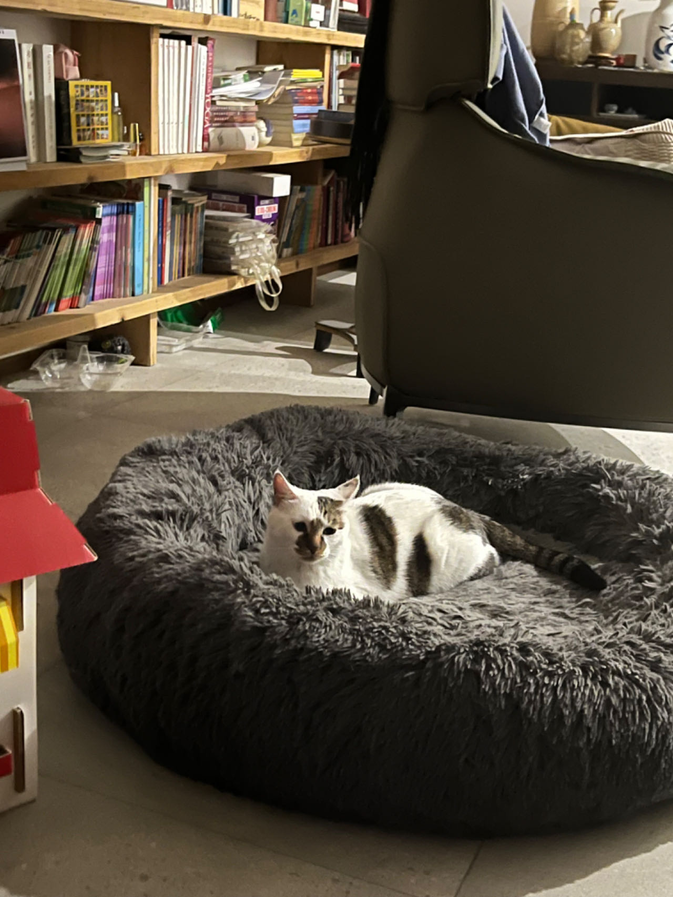
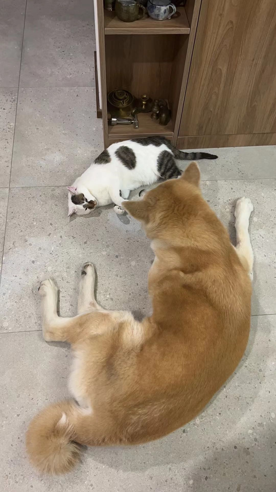

Kui

Cat mixed with white and dark green pattern.
Kui is a 2 years old cat. All he do is sleep and eat :) He is a huge foodie, he loves shrimp the most, he likes to eat grass for his digestion.
My mom found him on the street near my neiborhood. It was a cold windy night, he could have died in that winter night if my mom haven't found him.
Photo Gallery

Kui with 2 other cats in the household, they are his closest family members.
Kui looking sentimental in Dui's plush kennel. He is a very sentimental cat.
Kui loves his older sister Dui. However, she can be very strict to him and will bark at him if he attempts to hop onto book shelves.

Dui is having fun time without Kui!
Likes
- Shrimps
- Fly shape cat teaser
- Dui's plush kennel
Daqi Zhou